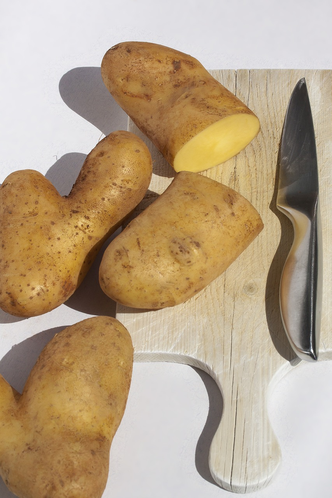
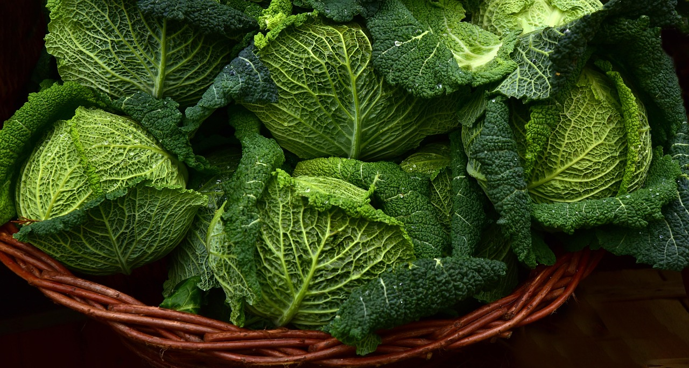
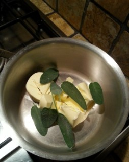
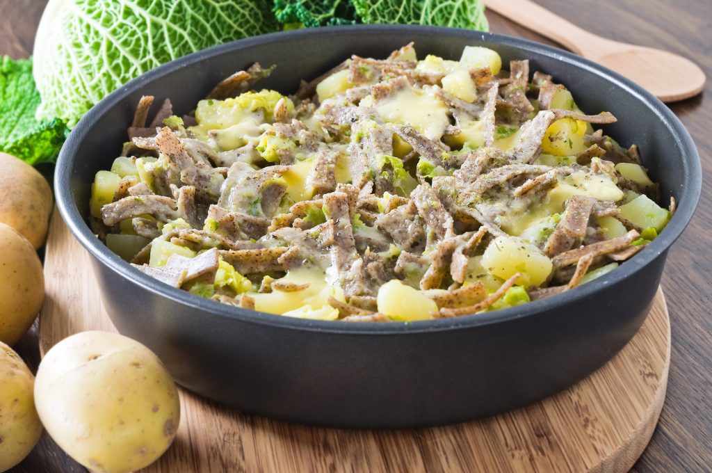

I pizzoccheri alla valtellinese sono una vera prelibatezza della cucina povera di montagna dove in ogni casa non mancavano mai burro,formaggio e patate: ingredienti semplici che danno vita ad un piatto buonissimo.
1. Sbucciamo le patate e le tagliamo a cubetti di media dimensione.
2. Togliamo le foglie più verdi alla verza e la tagliamo in pezzi piccoli.
3. Mettiamo a bollire l’acqua in una pentola grande.
4. In un pentolino mettiamo a scaldare il burro,l’aglio in camicia schiacciato e la salvia finché il burro diventa color nocciola,spegniamo il fuoco e rimuoviamo l’aglio.
5. Quando l’acqua bolle,saliamo abbondantemente ed aggiungiamo le patate e la verza.
6. Passati cinque minuti, aggiungiamo i pizzoccheri.
7. Nel frattempo tagliamo il formaggio a cubetti.
8. Una volta cotti i pizzoccheri, scoliamo tutto, ne versiamo metà in una teglia,cospargiamo con il formaggio, copriamo con l’altra metà di pasta e verdure e distribuiamo il Parmigiano ed il burro fuso su tutta la superficie.
9. Serviamo i pizzoccheri ben caldi.
